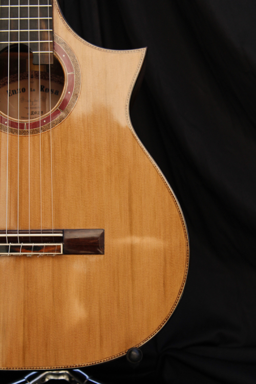

Why choose a handmade guitar?
- Own one-of-a-kind instrument designed just for you.
- Great superiority in sound, timber, sustain, volume and aesthetics.
- Richer variety of sounds that allows the owner to grow as a musician.
- With a careful maintanance and good care, it will be an intrument to last a lifetime.
“A good guitar is like a good wine...
It improves with age.”

The instruments that are born in my workshop are nothing
less than the materialization of my dreams,
which are being forged with my own hands...
It's a mixture of tangible and
intangibles elements; such as passion, care
and wood grain,
the latter revealing an unique pattern drawn by cells over the years.
final price includes:
-
Life-Long Warranty
-
Certificate of Authentication
-
Hardcase
-
 Strings
Strings
-
Many Payment Options
-
Hours of Feedback
Whatever it takes to get to your dream guitar!
world shipping not included
I usually work with
dhl